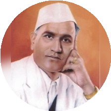

-Late Bhausaheb Hiray
The Trust Established in 1977 in the Memory of Late Bhausaheb Hiray, "A Great Freedom Fighter and Great Statesman".
The Trust Established in 1977 in the Memory of Late Bhausaheb Hiray, "A Great Freedom Fighter and Great Statesman".
This Institution started M.C.A. course in 2001 after seeking approval from the AICTE and is affiliated to the University of Mumbai. All students are selected on the basis of an entrance test covering topics on aptitude and computer concepts. It is a 2-years full time postgraduate course to which graduates from any field with mathematics at 10+2 level are eligible for admission.